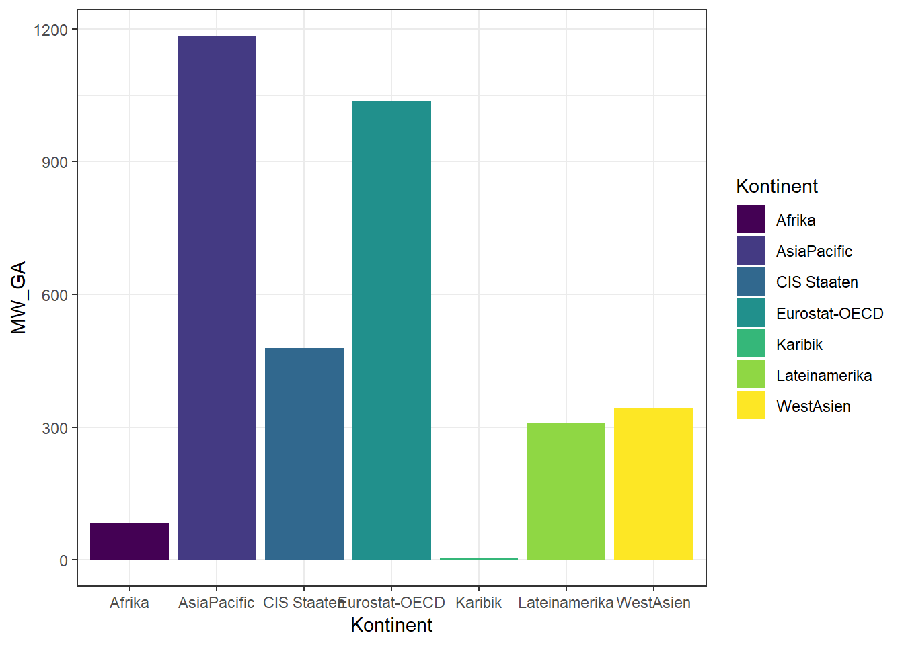
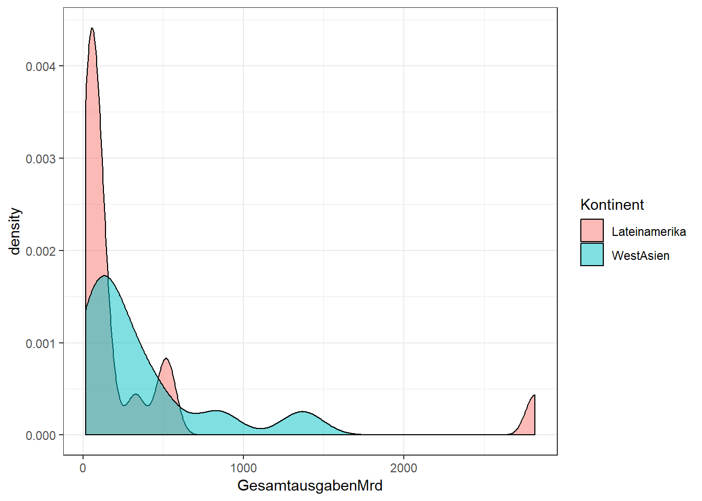
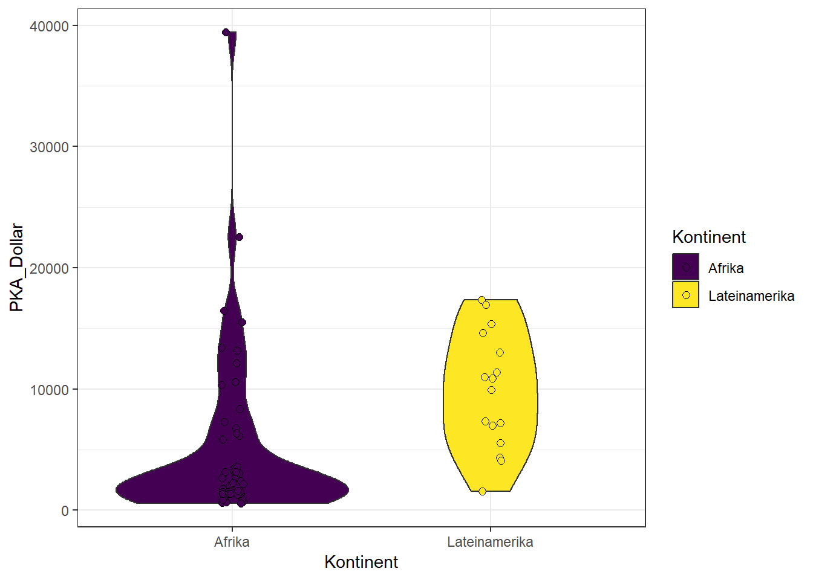
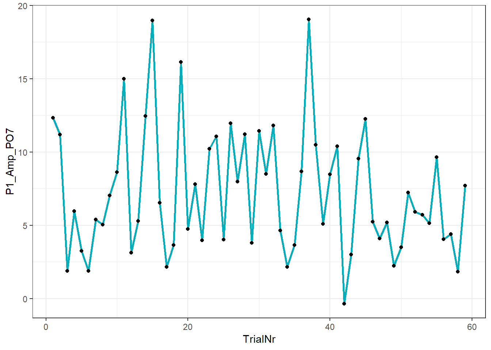
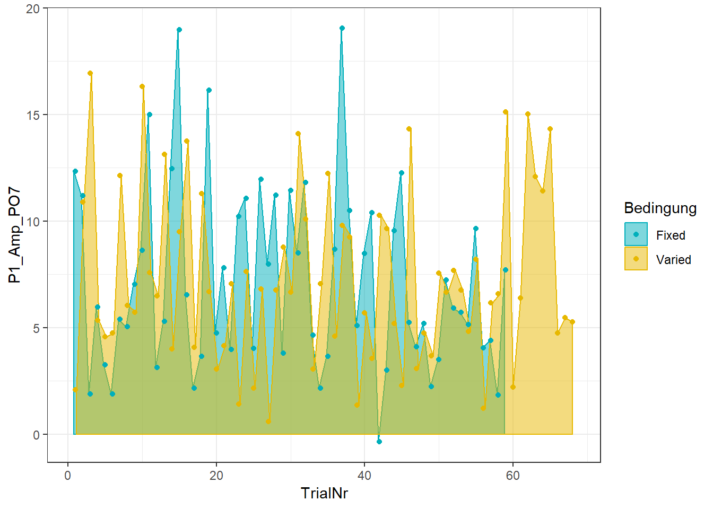
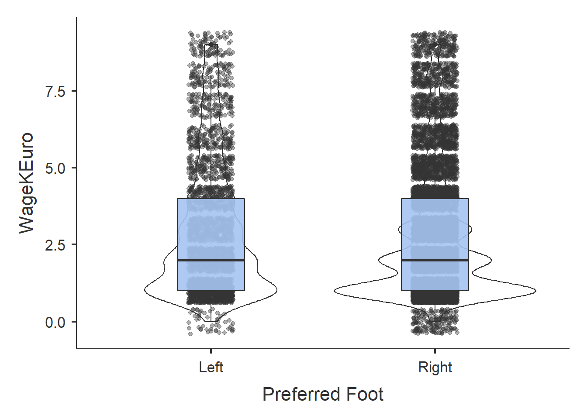

11 Abschlussarbeit
Die nachfolgenden Beispiele fassen die in dieser LV besprochenen Themenbereiche in Form von Aufgaben zusammen. Diese Aufgaben sind von dir zu bearbeiten und per Mail bis zum 28.02.2018 an mich zu senden. Als Vorlage für diese Übungen steht auf tuval.at ein R-Script zur Verfügung. Bitte dieses herunterladen und entsprechend den Anweisungen bearbeiten. Einige Hinweise zur Verwendung der Vorlage:
- Nach Herunterladen der Vorlage diese unter dem Namen WS18_R_X.R speichern, wobei für das X dein Familienname einzusetzen ist.
- Funktionen die in separaten Dateien abgespeichert werden sollten, sind unter folgenden Namen zu speichern und zu senden: WS18_R_X_Fun_Y.R, wobei für X wiederum dein Familienname einzusetzen ist. Für Y bitte den entsprechenden Funktionsnamen laut Anleitung verwenden.
Für die Abgabe der Aufgaben, sowie der Gesamtbeurteilung der LV siehe Abgabemodus am Ende dieses Kapitels.
Hinweis: bei jedem erstellten R-Skript sollte der nachfolgende Code am Anfang hineinkopiert werden:
# Initialisierung
rm(list = ls())
if (!require("pacman")) install.packages("pacman")
pacman::p_load(codebook, doBy, DT,
foreign, ggedit, ggplot2,
ggpubr, Hmisc, jmv, pander,
pastecs, psych, readr,
viridisLite)Datentypen und Definitionen
Die für folgende Aufgaben verwendeten Daten stammen von der Weltbank und wurden 2011 im Rahmen des International Comparison Program (ICP) erhoben.
The set of 2011 ICP results contains data for 199 countries that participated in the ICP 2011 from these regions or economic groupings: Africa, Asia and the Pacific, the Caribbean, the Commonwealth of Independent States (CIS), Eurostat-OECD, Latin America, Western Asia, singleton economies, and the Pacific Islands. Also included are estimates for non-benchmark economies. The data covers 26 expenditures categories for goods and services, and several indicators including PPPs, expenditure shares of GDP, total and per capita expenditures in US dollar both in exchange rate terms and PPP terms, and price level indices.
A1: Neben dem vollständigen Datensatz steht ein Auszug der Daten (2011_ICP_Data_Short.csv) zum Download zur Verfügung.
- Lade diese Datei und wandle gegebenenfalls die Tabelle in einen DataFrame um.
- Überprüfe die Datenstruktur mit einer geeigneten Funktion und gib diese in der Console aus.
- Falls das Land als Faktor definiert ist, wandle diese Variable in Typ chr um.
- Falls die Variable Kontinent nicht als Faktor definiert ist, wandle diese in eine Faktor mit den entsprechenden Stufenbezeichnugen (Afrika, AsiaPacific, etc.) um.
Nachfolgende Struktur sollte nach entsprechender Änderung des Datenframes gegeben sein:
## 'data.frame': 178 obs. of 6 variables:
## $ Kontinent : Factor w/ 7 levels "Afrika","AsiaPacific",..: 1 1 1 1 1 1 1 1 1 1 ...
## $ Land : chr "Algeria" "Angola" "Benin" "Botswana" ...
## $ GesamtausgabenMrd: num 474.8 143 16.1 27.2 22.8 ...
## $ PKA_Dollar : int 13195 7288 1766 13409 1343 712 2757 6126 897 1984 ...
## $ ExchgRateUS : num 72.94 93.74 471.87 6.84 471.87 ...
## $ Population : int 35980193 19618432 9099922 2030738 16967845 8575172 20030362 500585 4486837 11525496 ...Konrolliere, ob die Datentypen korrekt definiert sind!
Deskriptive Statistik
A2: Erstelle nun eine deskriptive Statistik, welche den folgenden Output (Mittelwert, Standardabweichung, Maximum und Minimum der GesamtausgabenMrd getrennt nach Kontinenten) erzeugt:
| Kontinent | MW GA | SD GA | Max. GA | Min. GA |
|---|---|---|---|---|
| Afrika | 82.3 | 168.4 | 843.8 | 0.46 |
| AsiaPacific | 1184 | 2946 | 13496 | 3.704 |
| CIS Staaten | 478.9 | 1036 | 3217 | 14.88 |
| Eurostat-OECD | 1036 | 2385 | 15534 | 8.768 |
| Karibik | 5.206 | 9.071 | 38.32 | 0.081 |
| Lateinamerika | 308.8 | 688.7 | 2816 | 15.58 |
| WestAsien | 343.3 | 398.7 | 1367 | 15.98 |
A3: Um eine Übersicht über die Bevölkerungsdichten in den verschiedenen Kontinenten zu erhalten, sollte durch Unterteilung der Variablen Population einen neue Gruppenvariable PopulationsGrp im Datenframe DF erstellt werden. Die Einteilung der Gruppen erfolgt dabei über die Quartile der Population, wobei:
- Alle Länder mit einer Population unter dem ersten Quartil (also Population \(< Q_1^{Population}\)) sollen der Stufe 1 (= gering) zugeordnet werden.
- Länder mit einer Population zwischen dem ersten und zweiten Quartil (also Population \(\ge Q_1^{Population}\) und \(< Q_2^{Population}\)) sollen der Stufe 2 (= mäßig) zugeordnet werden.
- Länder mit einer Population zwischen dem zweiten und dritten Quartil (also Population \(\ge Q_2^{Population}\) und \(< Q_3^{Population}\)) sollen der Stufe 3 (= mittel) zugeordnet werden.
- Alle Länder mit einer Population über dem dritten Quartil (also Population \(> Q_3^{Population}\)) sollen der Stufe 4 (= hoch) zugeordnet werden.
In einer Tabelle sollten anschließend die Häufigkeiten der gering/maessig/mittel/dicht bevölkerten Kontinente ausgegeben werden. Die Tabelle sollte folgendes Ergebnis zeigen:
| gering | maessig | mittel | dicht | |
|---|---|---|---|---|
| Afrika | 12 | 8 | 19 | 11 |
| AsiaPacific | 5 | 4 | 3 | 11 |
| CIS Staaten | 0 | 4 | 3 | 2 |
| Eurostat-OECD | 6 | 16 | 12 | 13 |
| Karibik | 20 | 1 | 0 | 0 |
| Lateinamerika | 0 | 7 | 5 | 4 |
| WestAsien | 2 | 4 | 2 | 4 |
A4: Zur Darstellung der durchschnittlichen Gesamtausgaben in den verschiedenen Kontinenten soll ein Balkendiagramm erstellt werden. Das Ergebnis soll inhaltlich der nachfolgenden Graphik entsprechen (Wahl der Farben ist dabei bliebig):

A5: Stelle nun die Verteilung der Gesamtausgaben in Mrd. (GesamtausgabenMrd) für die beiden Kontinente Lateinamerika und West-Asien als Dichteverteilung dar (sollte wie folgt aussehen):

A6: Für die pro Kopf Ausgaben (PKA_Dollar) von Afrika und Lateinamerika ist ein Violine-Plot zu erstellen (siehe nachfolgende Abbildung):

MehR Aufgaben
Für die folgenden Aufgaben laden wir zunächst einen neuen Datensatz (EEG_Daten.sav). Es handelt sich dabei um eine in SPSS gespeicherte Aufzeichnung von EEG-Daten. Worum es bei diesem Experiment genau ging, ist für die Bearbeitung der nachfolgenden Aufgaben unwesentlich. Die Bedeutung der Variablennamen ist folgender Beschreibung zu entnehmen:
- VPN: Versuchspersonennummer
- Bedingung * Fixed = Präsentation einen Stimuli erfolgte in festen (Fixed) Zeitabständen * Varied = Präsentation einen Stimuli erfolgte in variablen (Varied) Zeitabständen
- Block: jede Versuchsperon nahm an vier hintereinanderfolgenden Stimulationsserien (Blöcken) teil. Zwischen den Blöcken wurde jeweils eine 5-minüige Pause eingelegt.
- Korr: die Antwort auf Stimuli konnte entweder Korrekt, oder Inkorrekt sein.
- TrialNr: innerhalb jeden Blocks wurden \(n_B\) Stimulie dargeboten. Die Trialnummer gibt also an, wie viele Stimuli die jeweilige Person im jeweiligen Block präsentiert bekommen hat. Die Anzahl kann variieren, da ungültige Blocks bereits aus den Daten entfernt wurden.
- P1_Lat_PO7: beschreibt das zeitliche Auftreten (Latenz) der P1-Komponente20 in Millisekunden - gemessen an der EEG-Elektrodenposition PO721.
- P1_Amp_PO7: beschreibt die Amplitudenstärke der P1-Komponente22 in \(\mu V\) - gemessen an der EEG-Elektrodenposition PO7.
Die restlichen Variablen unterscheiden sich nur nach der Position der Elektroden (POZ, PO8, …) am Skalp. Eine detaillierte Beschreibung der Daten inkl. einer deskriptiven Statistik findest du im Kapitel Codebook EEG-Daten.
## re-encoding from UTF-8A7: Erstelle eine Tabelle, in welcher die Anzahl der Korrekten und Inkorrekten Antworten je Block dargestellt werden. Dabei sind Zeilen-, Spalten- und Gesamtsumme anzugeben.
| Inkorrekt | Korrekt | Sum | |
|---|---|---|---|
| Block 1 | 722 | 2385 | 3107 |
| Block 2 | 596 | 2400 | 2996 |
| Block 3 | 634 | 2489 | 3123 |
| Block 4 | 676 | 2461 | 3137 |
| Sum | 2628 | 9735 | 12363 |
A8: Wähle aus den Daten jene Teilmenge aus, die folgende Bedingung erfüllen (verwende die Funktion subset()):
- VPN = 4
- Bedingung = Fixed
- Block = Block 1
- Korr = Korrekt
Schreibe diese Teilmenge in die Variable S1_EEG. Ermittle die Anzahl der Trials in dieser Teilmenge, sowie:
- Minimum
- erstes Quartil
- Median
- Mittelwert
- drittes Quartil
- Maximum
| Min. | 1st Qu. | Median | Mean | 3rd Qu. | Max. |
|---|---|---|---|---|---|
| 802 | 838.5 | 860 | 857.9 | 885 | 899 |
A9: Erstelle Liniendiagramm mit eingezeichneten Datenwerte (als Punkte), um den Verlauf der P1-Amplitude der Elektrodenposition PO7 (P1_Amp_PO7) über die Trials der eben ausgewählten Daten darzustellen:

A10: Erweitere die Graphik dahingehend, dass die P1_Amp_PO7 getrennt für die Bedingung Fixed und Varied dargestellt werden. Du kannst dies mit zwei Linien oder durch ein Flächendiagramm (geom_area()) darstellen.
Beachte: die Auswahl der Teilmenge muss neu durchgeführt werden, da ja nun nicht nur die Bedingung Fixed, sondern auch Varied dabei sein soll (diese Variable dient dann auch als Gruppentrenner für die Kurven). Am besten du speicherst die neue Auswahl unter dem Variablennamen S2_EEG.

Schleifen und Funktionen
In diesem Abschnitt behandeln wir nochmals die Verwendung von Schleifen und selbst definierten Funktionen. Verwende für die folgenden Aufgaben die bereits in Aufgabe 10 gewählte Teilmenge des Datensets EEG (S2_EEG), also alle Daten der Versuchsperson 4 in den Bedingungen Fixed und Varied des Block 1 mir korrekter Antwort.
A11: nach Selektion der entsprechenden Teilmenge sind folgende Aufgaben zu lösen:
- speichere die Anzahl der in diesem Datensatz (S2_EEG) vorhandenen Zeilen in die Variable AnzZ.
- Berechne den Mittelwert der Variablen P1_Lat_PO7 und speichere das Ergebnis in MW_P1_Lat_PO7.
- Berechne die Standardabweichung der Variablen P1_Lat_PO7 und speichere das Ergebnis in SD_P1_Lat_PO7.
- Initialisiere eine Variable z_P1_Lat_PO7 mit der leeren Menge (NULL).
- In einer for-Schleife soll nun für jeden Datensatz die Variable P1_Lat_PO7 z-transformiert werden. Schreibe das Ergebnis in die Variable z_P1_Lat_PO723.
S2_EEG <- subset(...)
AnzZ <- dim(...)[...]
MW_P1_Lat_PO7 <- mean(..., ...)
SD_P1_Lat_PO7 <- sd(..., ...)
z_P1_Lat_PO7 <- ...
for (...){
... <- ...
}A12: Die Berechnung der z-Transformation kann in eine eigene Funktion ausgelagert werden. Kopiere den Code der vorigen Aufgabe und lagere die Berechnung der z-Werte innerhalb der Schleife in eine Funktion mit dem Namen ZFun aus. Orientiere dich gegebenenfalls an folgender Vorlage:
S2_EEG <- subset(...)
AnzZ <- dim(...)[...]
MW_P1_Lat_PO7 <- mean(..., ...)
SD_P1_Lat_PO7 <- sd(..., ...)
z_P1_Lat_PO7 <- ...
ZFun <- function(...) {
zWert <- (...) / ...
return(...)
}
for (...){
... <- ZFun(...)
}A13: Kopiere zunächst die gesamte Aufgabe 12 ans Ende deines Skripts und führe folgende Änderungen durch:
- Berechne für die Variable P1_Lat_PO7 die z-Transformationen und speichere das Ergebnis in der Variablen z_P1_Lat_PO7
- Berechne für die Variable P1_Amp_PO7 die z-Transformationen und speichere das Ergebnis in der Variablen z_P1_Amp_PO7
Es gibt dazu natürlich mehrere Lösungsmöglichkeiten, aber in der vorliegenden Aufgabe sollten verschachtelte Schleifen verwendet werden. Versuch die Aufgabe anhand nachfolgender Vorlage zu lösen:
S2_EEG <- subset(...)
AnzZ <- dim(...)[...]
MW_P1_Lat_PO7 <- mean(...)
SD_P1_Lat_PO7 <- sd(...)
z_P1_Lat_PO7 <- ...
MW_P1_Amp_PO7 <- mean(...)
SD_P1_Amp_PO7 <- sd(...)
z_P1_Amp_PO7 <- ...
ZFun <- function(..., ..., ...) {
zWert <- (... - ...) / ...
return(...)
}
for (...){
for (...) {
if(...){
z_P1_Lat_PO7[...] <- ZFun(..., ..., ...)
} else if(...){
z_P1_Amp_PO7[...] <- ZFun(..., ..., ...)
} # Ende if
} # Ende for j
} # Ende for iJAMOVI und R
Diese Aufgabe kannst du als Bonusaufgabe betrachten. Um sie zu bearbeiten, musst du zuvor JAMOVI auf deinem Rechner installieren. Details siehe dieses Link.
A14: Zur Bearbeitung dieser Aufgabe verwenden wir die Datei Football.csv, welche aus dem Repository von Kaggle heruntergeladen24 wurde. Hier eine kurze Beschreibung des Dateiinhaltes:
Football.csv includes lastest edition FIFA 2019 players attributes like Age, Nationality, Overall, Potential, Club, Value, Wage, Preferred Foot, International Reputation, Weak Foot, Skill Moves, Work Rate, Position, Jersey Number, Joined, Loaned From, Contract Valid Until, Height, Weight, LS, ST, RS, LW, LF, CF, RF, RW, LAM, CAM, RAM, LM, LCM, CM, RCM, RM, LWB, LDM, CDM, RDM, RWB, LB, LCB, CB, RCB, RB, Crossing, Finishing, Heading, Accuracy, ShortPassing, Volleys, Dribbling, Curve, FKAccuracy, LongPassing, BallControl, Acceleration, SprintSpeed, Agility, Reactions, Balance, ShotPower, Jumping, Stamina, Strength, LongShots, Aggression, Interceptions, Positioning, Vision, Penalties, Composure, Marking, StandingTackle, SlidingTackle, GKDiving, GKHandling, GKKicking, GKPositioning, GKReflexes, and Release Clause.>
Bearbeite nun folgende Aufgabenstellungen:
- Lade diese Datei in JAMOVI
- Erstelle eine deskriptive Statistik (nur den Mittelwert) des Einkommens WageKEuro getrennt nach dem bevorzugten “Spielfuß” (Preferred Foot).
- Lass die für diese Statistik im JAMOVI den entsprechenden R-Code anzeigen.
- Kopiere diesen Code in dein Skript.
- Lade nun die Datei auch im R (also oberhalb des gerade kopierten Codes) und führe diesen in R durch - vergleiche die Ergebnisse.
- Zurück im JAMOVI: Im Menü Data kann ein Filter verwendet werden, um Teilmengen der Daten zu selektieren. Setze den Filter auf folgende Einstellung:
Abbildung 39: JAMOVI Filtereinstellungen
- Erweitere deine Deskriptive Statistik um einen Boxplot mit Violin und Data (jittered).
- Kopiere den R-Code in dein Skript und vergleiche die Ergebnbisse. Beachte, dass der Filter in R separat zu setzten ist!
##
## DESCRIPTIVES
##
## Descriptives
## ---------------------------------------
## Preferred Foot WageKEuro
## ---------------------------------------
## Mean Left 3.05
## Right 2.78
## ---------------------------------------
GRATULATION - du hast es geschafft!
positiver Amplitudenausschlag (Peak) ca. 100 ms Präsentation des Stimuli.↩
parietal-occipitale Elektrode Nummer 7 (linksseitig).↩
positiver Amplitudenausschlag (Peak) ca. 100 ms Präsentation des Stimuli.↩
die Variable z_P1_Lat_PO7 ist dann also ein Vektor mit z-transformierten Werten der Variablen Variable P1_Lat_PO7, welcher die Länge AnzZ haben sollte!↩
weitere interessante Datenquellen “zum spielen” findest du unter Ideal student life und World values↩